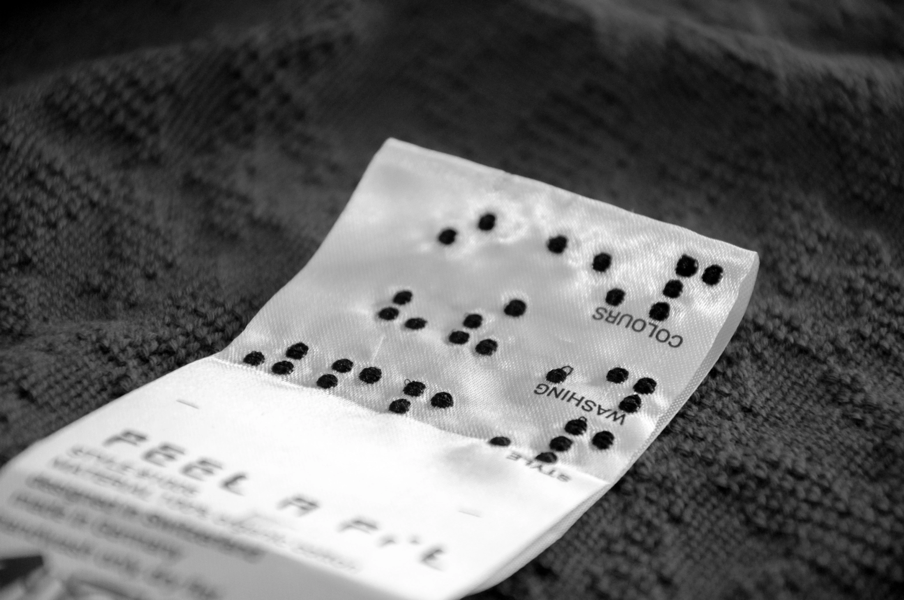

Problem

Source: https://in-touch-digital.com/2021/02/24/lost-in-delivery-touch-fashions-inconsistent-communication-to-the-visually-impaired/
Putting together coordinating outfits for various occasions or everyday wear can be a challenge for people who are blind, colorblind, or visually impaired. These challenges may be overcome with the help from friends and family members who can give clothing descriptions and suggestions, or through the use of descriptive Braille labels which can be attached onto clothing items. There are also existing mobile apps that can scan special QR code labels and provide descriptions. However, most clothing items do not come with this type of label, so acquiring or generating them for every clothing item may not be easy process, and it could be costly. Additionally, attaching the labels onto the clothing items will likely require help from others, as they must be sewn or ironed on. Moreover, it’s not always possible to have someone around to help and give suggestions. With the use of computer vision techniques and a mobile device, this project aims to provide an alternative solution to assist the visually impaired in identifying clothing items while supporting the user's independence.
Computer vision and deep learning utilization in the topic of fashion and apparel are still very recent areas of research and study that have just emerged within the last decade. Upon researching such techniques, particularly for the use in assisting visually impaired individuals for fashion purposes, it is clear that the topic is still fairly unexplored. I have found a few systems designed specifically to provide wardrobe assistance to the visually impaired. A couple of these systems [1][2] incorporate the use of visual and auditory sensors to capture images and auditory commands, but the methods used for color and pattern recognition do not implement deep learning techniques, instead choosing to implement supervised learning methods. Other systems [3][4][5] use pre-trained CNN models to classify clothing item types, fabrics, patterns, and can even interpret text on clothing. However, these systems do not incorporate the process or devices necessary for image-capturing by the blind individuals. As such, these systems may be more useful in terms of providing assistance with online shopping.
However, by comparing these different models and extracting the desired attributes, it may be possible to implement a mobile application that fulfills the goal in assisting the visually impaired in identifying clothing, so that they can more easily and independently put together outfits for any occasion.